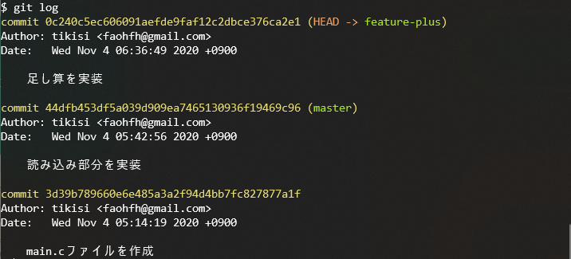

git勉強会
最初に設定しましょう
git config
名前とメールアドレスを設定してあげます
git config --global user.name hogegit config --global user.email example@example.com作業ディレクトリ(ワーキングツリー)の作成
これから作業するディレクトリを作成します。
mkdir pandd_gitcd pandd_gitこのディレクトリをgitの管理対象にするため、初期化します。
git init .
実際にやってみよう
電卓プログラムをgitでバージョン管理しながら作っていきます
プログラムの概要
$ ./a.exe1 + 231 - 2-1a 演算子 b の形式で入力すると計算結果が出力されるプログラムを作成していきます
1. addとcommit
ファイルの作成
main.cという名前でファイルを作成してください。
touch main.c # touchは空のファイルを作成するコマンドですこれで、作業ディレクトリ(ワーキングツリー)に新しいファイルが作られました。
git status
git statusコマンドはリポジトリの状態を確認できます。
コミットツリーに記録されていない変更があれば、表示してくれます。
git statusmain.cファイルが作成されたことはコミットツリーに記録されていないので、赤色で表示されます。

git add
main.cファイルを作成したことをリポジトリにセーブしましょう。
まずは、インデックスに追加していきます。
git add ファイル名コマンドは引数に渡したファイルをインデックスに追加します。
git add main.cstatusを確認してみると、インデックスに追加されたため緑色で表示されます
git commit
インデックスに追加できたので今度はコミットツリーに記録します。
記録する履歴のことをコミットといいます。
また、何の変更をしたのか後で分かるようにコメントを残す必要があります。このコメントをコミットメッセージといいます。
git commit -m "コミットメッセージ"コマンドはインデックスに登録された変更をコミットツリーに記録します。また、mオプションをつけることでコミットメッセージを書くことができます。
git commit -m "main.cファイルを作成"statusを確認してみると、コミットツリーに記録されていない変更はないと表示されます。

git log
git logコマンドは過去のコミット一覧を確認することができます。

3d39b.....という文字列はこのコミットの識別番号で後で現在の状態を復元したいときに使います。
2. main.cに変更を加える
編集
main.cは現在空のファイルなので中身を書いていきます。
とりあえず、読み込み部分だけ記入しましょう。
int main() { int a, b; char c; scanf("%d %c %d", &a, &c, &b); return 0;}コミットツリーに記録されていない変更ができたため、git statusで確認すると赤く表示されます。
git diff
最新のコミットと現在のワーキングツリーを比較してどんな変更が加わったのか確認することができます
git diff
追加された行は+で表示されます。対して、削除された行があった場合は-で表示されます。
記録
今回の変更をコミットツリーに記録しましょう
git add main.cgit commit -m "読み込み部分を実装"git logで確認するとコミットが増えています。

インデックスは何のためにあるの？
A. コミットしたい変更を選んでからコミットできるからです。
変更を一度にコミットする必要はありません。多くの変更をしたときは分割してコミットすることができます。
例えば、A,B,Cという3つのファイルで変更があったとします。ですが、AでのコミットメッセージとB,Cでのコミットメッセージを別のものにしたいです。その場合まずAをadd&commit、それからB,Cをadd&commitできます。
また、addされた変更はdiffコマンドに映らなくなるのでcommitするときの漏れを防ぐことができます。
3. ブランチ
ブランチとは並列して作業ができるように、ワーキングツリーとコミットツリーをコピーして別の作業空間を用意する機能です。
git branch ～ブランチのリスト～
git branchコマンドで存在するブランチのリストが確認できます。
x
git branch
現在いるブランチの先頭に*マークが表示されます。
git branch ～ブランチの作成～
git branch ブランチ名でブランチ名を指定すると新しいブランチを作成することができます。
今回はmain.cに足し算の機能を追加したいのでfeature-plusという名前のブランチを作成します。
x
git branch feature-plusgit branchコマンドで確認するとfeature-plusブランチが追加されています。
git switch
git switch ブランチ名で今いるブランチの切り替えができます。
xxxxxxxxxxgit switch feature-plus
※ブランチの作成と切り替えを同時に行うこともできます。
x
git switch -c feature-plus編集
足し算の機能を追加します
int main() { int a, b; char c; scanf("%d %c %d", &a, &c, &b); if(c == '+') { printf("%d\n", a + b); } return 0;}記録
変更したのでコミットします。
git add main.cgit commit -m "足し算を実装"
ここでfeature-plusブランチでのgit log で確認してみましょう

masterブランチにswitchしてlog再び確認してみます
xxxxxxxxxxgit switch mastergit log
足し算の実装はfeature-plusブランチで実装したためmasterブランチでそのコミットは表示されないはずです。
また、エディタでmain.cを開いても足し算の実装はされていないはずです。

git merge
feature-plusブランチでの変更をmasterブランチに結合させます。
他のブランチでの変更を結合することをマージするといいます。
git merge --no-ff ブランチ名コマンドは引数で指定したブランチをマージすることができます。
git branch # masterブランチにいることをかくにんしてくださいgit merge --no-ff feature-plusエディタでmain.cを開くと足し算の実装が追加されています。
git log --graph
--graphオプションをつけることでブランチの分岐・統合の変遷を見ることができます。
git log --graph
4. 過去の状態に戻す
さて、ここでmasterブランチをfeature-Aブランチを切る前の状態まで戻してみましょう
コミットとしてセーブしてあるので戻すことができます。
git reset
過去のコミットの状態まで戻りましょう
git reset --hard ハッシュ値コマンドでそのコミットの状態まで戻ることができます。
ハッシュ値というのはgit log コマンドで確認することができます。
git reset --hard 44dfb453df5a039d909ea7465130936f19469c96
エディタで中身を開くとソースコードの状態が戻っていると思います。
引き算機能を実装するブランチを作成
現在足し算機能のみ実装されているので、引き算の機能を実装していきましょう。
引き算を実装するブランチを作成します。
git branch feature-minusgit reflog
masterブランチはresetコマンドを使って状態を戻してしまったので状態を戻す前
つまりfeature-plusブランチをマージした時点まで進めましょう。
さっそく、git logでコミットを確認してみます。
あれ？ ↓のハッシュ値が欲しいのに見つからない...

git resetコマンドはコミットの履歴も戻してしまいます。
ここで登場するのがgit reflogコマンドです。
このコマンドは操作の履歴を確認することができます。
git reflogfeature-plusブランチをマージした地点まで戻します。
git reset --hard e8bc4ea整理
戻したり進んだりしたので、いったん現状のブランチの状態を確認しましょう。

5. コンフリクト
先ほどのマージでは特に問題なくマージできました。
しかし素直に結合ができない場合もあります。
引き算機能を実装
xxxxxxxxxxgit switch feature-minus # minusブランチに移動引き算の機能を追加します。
int main() { int a, b; char c;
scanf("%d %c %d", &a, &c, &b);
if(c == '-') { printf("%d\n", a - b); }
return 0;}add, commitします。
git add main.cgit commit -m "引き算を実装"masterにマージ
masterブランチにfeature-minusブランチでの変更を適用していきます。
xxxxxxxxxxgit switch mastergit merge --no-ff feature-minusコンソールにCONFLICTという文字が表示されます。

これはマージが上手くいかなかったということです。
マージが上手くいかないことをコンフリクトといいます。
コンフリクト
今回のマージがどういう状況だったのかを考えていきましょう。
まず、下図のようにコミットツリーにA,B,Cという名前をつけます。

B, Cの親であるAは

B,Cを比較すると


同じ行を編集しています。(9～11行)
マージする際に同じ個所を変更が変更されているとgitはどちらを採用すればよいか判断がつきません。
なのでコンフリクトを発生させてプログラマ自身に判断を任せます。
コンフリクト解消
main.cファイルを開いてみましょう。
ソースコードのどの箇所が原因でコンフリクトが起きたのか書いてあります。

HEADは現在いるブランチの最新のコミットを表しています。
なので<<<<<HEAD ～ =======はBの状態が書かれています。
対して、======== ～ >>>>> feature-minusはCの状態が書かれています。
このファイルを意図するように編集してあげましょう。
コンフリクトを直した後はadd, commitが必要です。
git add main.cgit commit -m "コンフリクト解消"logコマンドで確認すると
6. GitHub
アカウント作成
省略
ここから先は二人一組で作業してもらいます。
これ以降、それぞれのメンバーをAさん、Bさんと呼びます。
ssh-keyの登録
鍵を作成、登録しておくことでGitHubと安全に通信することができます。
ターミナル上で鍵を作成しコピーします。
# 鍵の作成 ssh-keygen -t rsa
# 公開鍵のコピー(windowsの人)cat ~/.ssh/id_rsa.pub | clip.exe# 公開鍵のコピー(macの人)cat ~/.ssh/id_rsa.pub | pbcopy次にhttps://github.com/settings/keysにアクセスして鍵を登録します。
New SSH keyボタンを押します。
Titleには好きな名前を付けて、Keyの欄に先ほどコピーした鍵を貼り付けます。(Ctrl-v or Cmd-v)

最後にAdd SSH keyボタンを押して完了です。
リモートリポジトリの作成
Aさんはリモートリポジトリを作成していきます。
今回はpandd_gitという名前でリポジトリを作成しましょう。

次にSSHを選択して、横のURLをコピーします。
以下のコマンドをコンソールから入力してください。
git remote add origin コピーしたURLgit push -u origin mastergit remote add originコマンドでリポートリポジトリを登録します。
git push -u origin masterコマンドでリモートリポジトリのmasterブランチにローカルリポジトリのmasterブランチの内容を送ります。
github上からソースコードが確認できるようになっていると思います。

Collaboratorに追加
Bさんに先ほど作成したリモートリポジトリへの変更権限を付与します。
※誰でも変更ができると荒らされてしまうので、見ることはできますが変更はできないようになっています。
Aさん
Settings>Manage access>Invite a collaboratorからBさんへ招待を送ってあげてください。

Bさん
- Bさんにはメールが届いていると思うので、招待を承認してください。
- Aさんの作成したリポジトリにブラウザでアクセスします。
- Codeボタンを押してHTTPSのURLをコピーしてください。
コンソールを開いて、以下のコマンドを入力します。
git clone コピーしたURLcd pandd_gitgit cloneコマンドはリモートリポジトリをコピーしてローカルリポジトリを作成します。
7. 共同開発
電卓プログラムは足し算と、引き算の機能が実装された状態です。
あと掛け算と割り算の機能も実装していきます。
それぞれの機能をAさんBさんで担当を決めて作ってください。
完成したらadd commitします。
git push
git push コマンドでリモートリポジトリにローカルリポジトリでのコミットを送信します。
git push origin mastergit pull
最初に完成した人は問題なくgit push コマンドが実行できたと思います。
ですが、二人目の人はエラーが出たと思います。これはリモートリポジトリで変更があったためpushできないというエラーです。
なのでリモートリポジトリでの変更を持ってきてあげる必要があります。
git pull ブランチ名コマンドでリモートリポジトリの変更をローカルリポジトリに適用できます。
git pull origin masterおそらく同じ個所を変更したためコンフリクトが発生したと思います。
なので、
- コンフリクトを解消
- add commit
- push
してあげましょう。
git pull 補足
git pullコマンドを実行したらコンフリクトが発生しました。
mergeコマンドを使ったわけでもないのに何故？と思った人もいるかもしれません。
実はgit pull コマンドは2つのコマンドの組み合わせの別名なのです。
xxxxxxxxxxgit fetch origin master # リモートリポジトリからmasterブランチの情報を取得するgit merge origin/master # リモートブランチのmasterブランチ(origin/master)をローカルリポジトリのmasterブランチにマージ
8. おまけ～GitHub Flow～
ここから先はおまけなのであまり詳しくはやりません。
GitHub Flowとは
- チーム開発でGitHubを使用するときの流れをまとめた手順書
- 多くの企業などで採用されている
- 他にもgit flow など色々な流派がある。
Issue
GitHub上で使用可能なBTS(バグ管理システム)
以下のようなものを管理する
- バグのリスト
- 実装する予定のタスクリスト

Pull Request
- トピックブランチでタスクが完了したときにmasterにマージしたり確認してほしいと他のプログラマ依頼する機能
- 他のプログラマはPull Requestを見てコードに問題がないか確認ができる
3つの機能
- Conversation チャットで実装について議論できる
- Commits そのブランチで行われたコミットの一覧が確認できる
- File Changed マージ先のブランチとの差分を確認できる
GitHub Flow の流れ
- Issueを元にトピックブランチをmasterから切る
- コードを完成させる
- リモートのmasterブランチで更新があるかもしれないので、最新のmasterをトピックブランチにマージ
- git push
- pull requestを作成
- 他の開発者にレビューしてもらう(問題が見つかれば2まで戻って修正)
- masterへマージ
余力のある人は電卓プログラムをGitHubフローを使って改造してみましょう
例.
入出力をループして何度も計算できるようにする
余りの演算を実装
0除算エラーの対策
etc...
9. GitHub Flowの例
ここでは、入出力をループして何度も計算できるようにする実装を例に紹介していきます。
Issueを作成
New issueから作成画面へ

タイトルと詳細を記入して Submit new issueでissue作成

実装
ローカルリポジトリでブランチを作成
x
git branch feature-loopgit switch feature-loopmain.cを編集
xxxxxxxxxx
int main() { int a, b; char c;
while(1) { scanf("%d %c %d", &a, &c, &b);
if(c == '+') { printf("%d\n", a + b); } if(c == '-') { printf("%d\n", a - b); } if(c == '*') { printf("%d\n", a * b); } if(c == '/') { printf("%d\n", a / b); } }
return 0;}add & commitします。
xxxxxxxxxxgit add main.cgit comit -m "入出力をループに"もしかしたらリモートのmasterで変更があるかもしれないのでpullしておきます。
xxxxxxxxxxgit pull origin masterpushしてリモートのfeature-loopブランチに送ります。
リモートにfeature-loopブランチはありませんが、存在しないブランチを指定すると自動で作成されます。
xxxxxxxxxxgit push origin feature-loopPull Request
GitHub上でPull Requestを作成しましょう。
Compare & pull requestでpull request作成画面へ
pull requestの説明を書くのですが、ここで Close issue番号としておきましょう。
こうすることでpull requestがマージされたときにissueが閉じられます。

コードレビュー & マージ
ペアの人はGitHubのPull Requstからコードを確認してあげてください。
問題がある場合はConversationやFileChangedにコメントを書きます。
問題がなければ、Merge pull requestからマージしてください。

10. まとめ
gitを使った開発を大雑把に言うと、
- プログラムを書く
- add
- commit
を繰り返し、一つの機能が完成したら
- git pull でリモートリポジトリの変更をマージ
- git pushでリモートリポジトリに送る
となります。
なので言ってしまえば
xxxxxxxxxxgit add git commit git push git pull以上のコマンドが使えれば何とかなります。（多分
色々な機能をいっぺんに使いこなすのは大変なので、次回のみんげーでは
- ブランチはmasterのみ
- commitを残すことで過去の状態に戻せるようにしておく
- gitのmerge機能を使ってお互いの変更を結合する
といった感じに機能の一部を使うだけでもかなり効率的に開発できると思うので、積極的に使ってみてください。
参考資料
gitを勉強するにあたって参考になるサイトを紹介しておきます。
易しめの入門サイト
公式の説明書
merge --no-ffの意味が分かると思います
少し古い本ですが、この資料の作成にあたり参考にしました